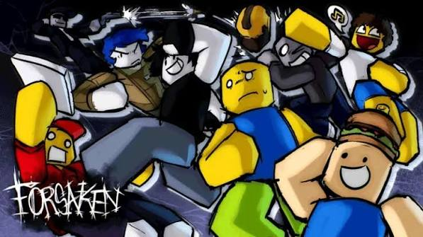
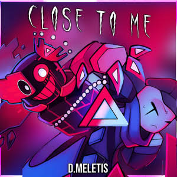
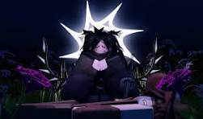
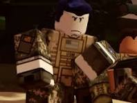

Forsaken se trata de um jogo ASYM (Assimétrico) do Roblox, famoso diria, mas não no nível máximo.

Forsaken se trata de um jogo ASYM (Assimétrico) do Roblox, famoso diria, mas não no nível máximo.

Um jogo assimétrico é aquele onde os jogadores assumem papéis diferentes, com objetivos, regras, habilidades e mecânicas próprias. Diferente de jogos simétricos (onde todos têm as mesmas condições de vitória e recursos iniciais), a assimetria foca em criar experiências únicas para cada lado.

